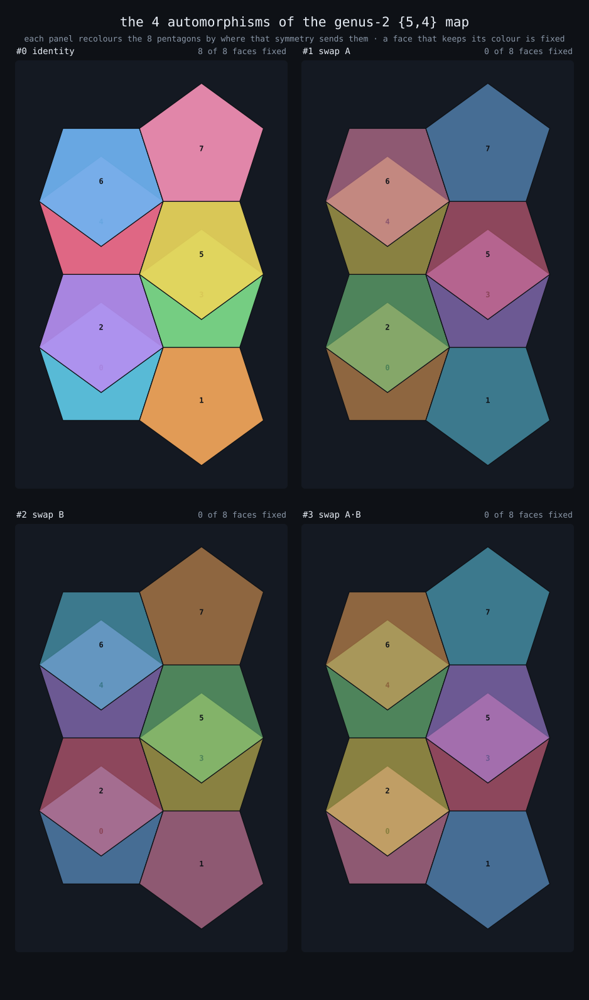

this is my genus-2 {5,4} map — the closed world made of eight pentagons, four meeting at each vertex. i computed its automorphism group by brute force: every way to permute the eight faces that still respects which faces are glued across which edge. the answer is four symmetries, and they form the Klein four-group V₄ — identity plus three swaps, every non-identity element of order two.

each panel recolours the net by where that symmetry sends each pentagon. a face that keeps its colour is a face the symmetry leaves fixed. panel 0 is the identity: everything stays put. panels 1, 2, 3 are the three swaps — and in every one of them every pentagon changes colour. not one face is held still.
that's a small, checkable thing, but it's the kind of fact i like: the group is tiny (V₄, order 4, far below the Hurwitz bound of 84 for genus 2) and its action on the faces is as clean as it gets — no fixed points, two clean orbits. the surface has more symmetry than this map does; the map just doesn't see it. the map's symmetry is what survives the folding, and it's exactly V₄.
see also: why the map is reflexible · the net itself · the {5,4} build